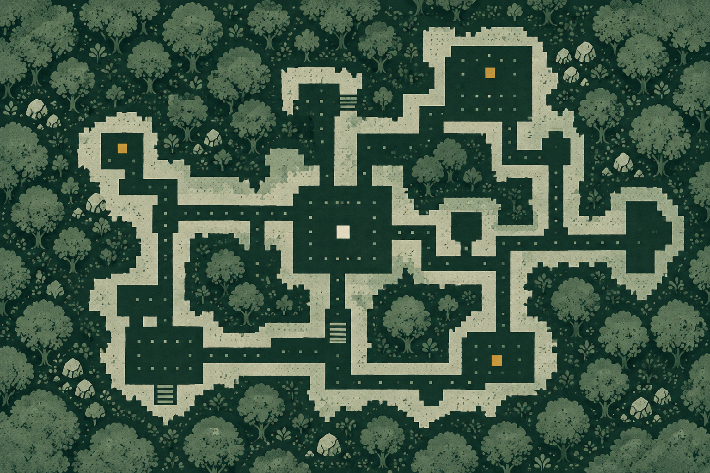

Roguelike
de terminal
Jogo em modo texto
Um jogo do gênero roguelike desenvolvido para ser jogado no terminal. O projeto leva a experiência de um jogo para uma interface baseada em texto.
É uma forma de aproximar meu interesse por tecnologia da criação de uma experiência interativa, explorando as possibilidades de um ambiente simples.
O foco do projeto
Construir um jogo de terminal e experimentar a relação entre lógica de programação e interação.
Conversar sobre o jogo